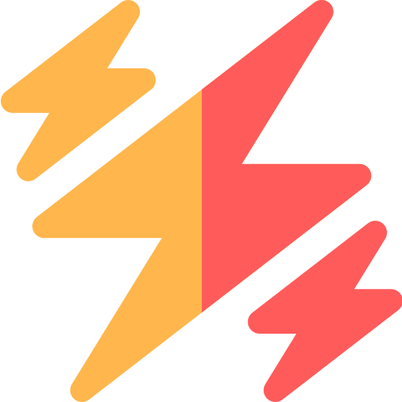
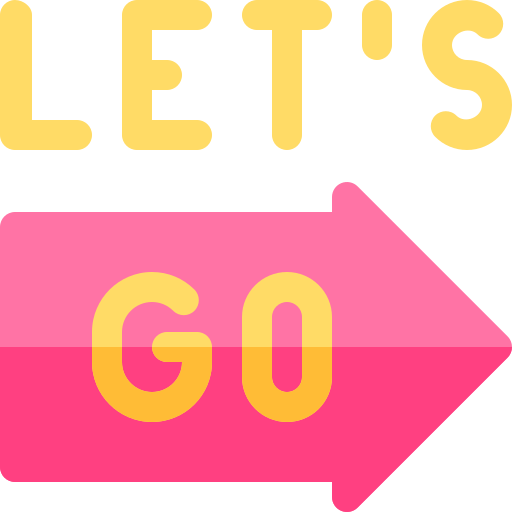
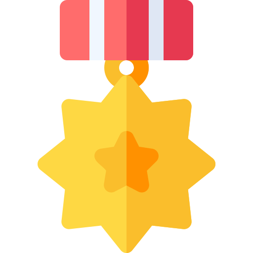

The rules of behavior change:
-
Step 1Trigger
 To form a Good Habit Make it obvious
To break a Bad Habit Make it invisible
To form a Good Habit Make it obvious
To break a Bad Habit Make it invisible
- Step 2Craving  To form a Good Habit Make it attractive To break a Bad Habit Make it unattractive
- Step 3Response  To form a Good Habit Make it easy To break a Bad Habit Make it difficult
- Step 4Reward  To form a Good Habit Make it satisfying To break a Bad Habit Make it unsatisfying